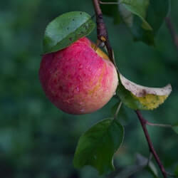
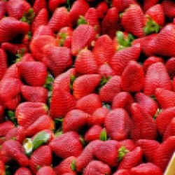
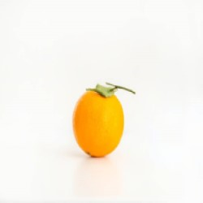
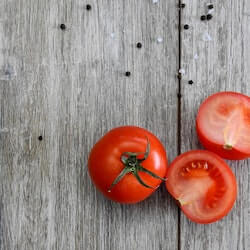
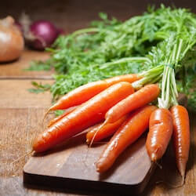
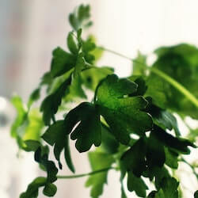
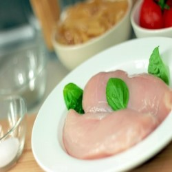
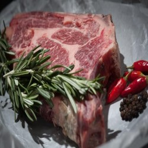
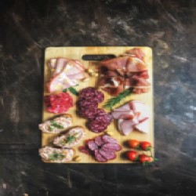

Lista de compras
Frutas:
-
 Manzana La manzana o poma es el fruto comestible de la especie Malus domestica, el manzano común.
-
 Fresa La fresa o frutilla (Fragaria) es un género de plantas rastreras estoloníferas de la familia Rosaceae.
-
 Naranja La naranja es una fruta cítrica obtenida del naranjo dulce y del naranjo amargo, de origen asiático.
-
Verduras:
-
 Tomate El tomate es el fruto de la planta Solanum lycopersicum, de importancia culinaria y es una verdura.
-
 Zanahoria La zanahoria pertenece a la especie de la familia de las umbelíferas, es oriunda de Europa y Asia sudoccidental.
-
 Cilantro El cilantro es una hierba anual de la familia de las apiáceas (antes llamadas umbelíferas).
-
Carnes:
-
 Pollo subespecie doméstica de aves galliformes de la familia Phasianidae procedente del sudeste asiático
-
 Bisteck Un bisteck es cualquier corte de carne roja que haya sido cortada en forma de filete para el consumo humano.
-
 Carne picada Para su preparación se desmenuzan y se cortan los músculos, grasas y nervios mediante cuchillo.
-